Cook Quantitatively With Energy
A live-cooking-meme-making show in collaboration with Colette Aliman
Cook Quantitatively With Energy, is a live-cooking-meme-making show where the scarcity of energy and attention are kneaded together in the diagrammatic dough.

Performance at Triennale Milano
"Join Ursula and special guests to construct a recipe for living through these trying times of energy and media politics. We will discuss how to conceptualize energy consumption and relate it to the many different bodies that are using and being exploited by an energized apparatus of commodity. In the end, we will create an energy dough that prophesizes equal distribution of energy across species- to radically reform and create a shared agency in the energy industry and media platforms."

Performance at ZIRKA, Munich
🌞 The nuclear fusion reaction of the Sun generates “nine sextillion, nine followed by twenty two zeros
kilocalories every second”.
🌍 The Earth receives “one-2.2 billionth” of this solar energy.
🌿 Photosynthesizing species convert solar energy at “1.951 calories per minute per square centimeter” into
chemical energy.
🌾 Flour, derived from wheat, contains “3.64 kcal per gram”, congealed solar energy.
💥 The 1.1 Megajoules of energy from the nuclear fusion breakthrough is equivalent to the energy in “70 grams of
flour”, costing “4.13 cents”.
🏃 An average person constantly consumes “2 kW of energy”, which is roughly equivalent to keeping an electric
kettle switched on all the time.
🌞➡️ This consumption rate is equivalent to the energy received by a “1.46 square meter surface from the sun on
Earth”, or to “pouring 7.85 grams of flour every minute”.
📱 A thousand impressions on Instagram cost “$6.70”, equating to “occupying 5.1122 square meters of digital
screen for three seconds”.
🌞➡️🔋 If the aforementioned screen were a solar panel, it would generate “1 kilocalorie per three seconds”,
equivalent to “0.27 grams of flour”, costing “0.016 cents”.
📺 An hour-long, full HD cat video on YouTube consumes “5,250 kcal of energy”, equivalent to “1.5kg of
flour”.
🐱 This amount of energy could feed an average adult cat, which needs “around 200 kcal per day”, for almost a
month.
Collaboration with Colette Aliman
Presented by 25av Platform
Performed at iMAL, ZIRKA, Triennale Milano, and Technical University of Munich
 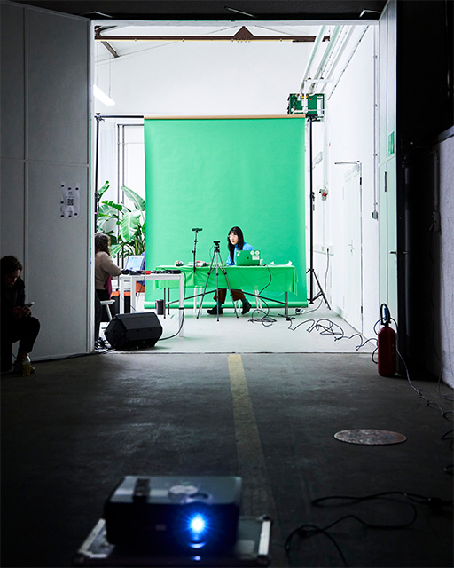
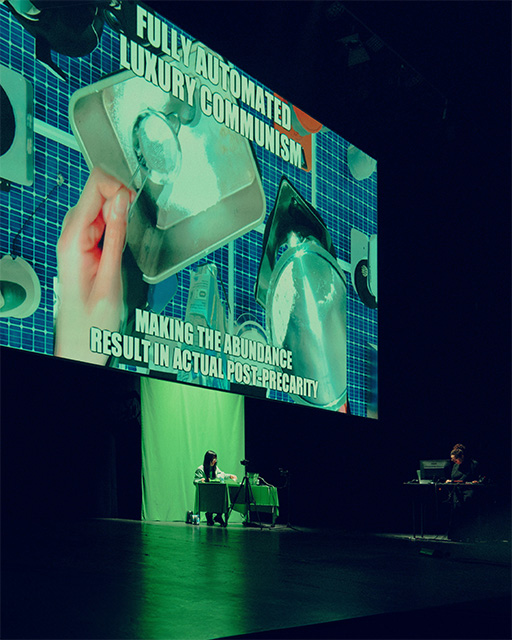
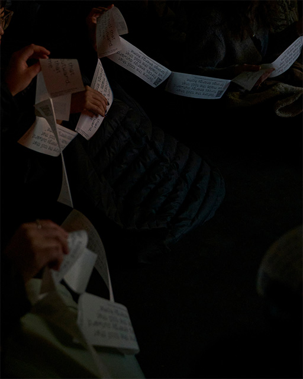
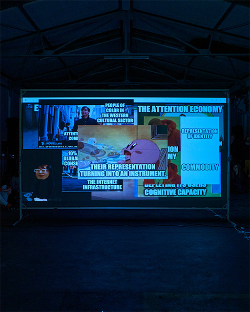
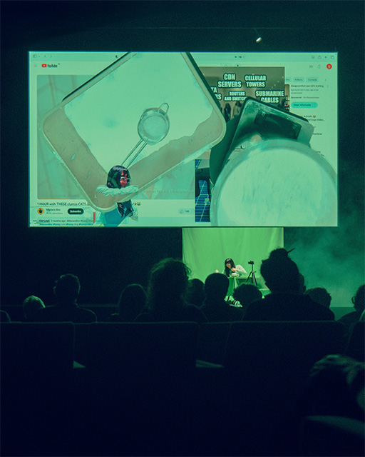
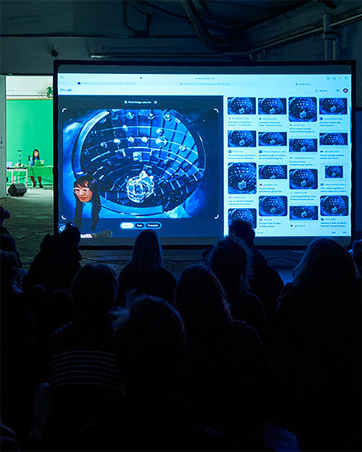
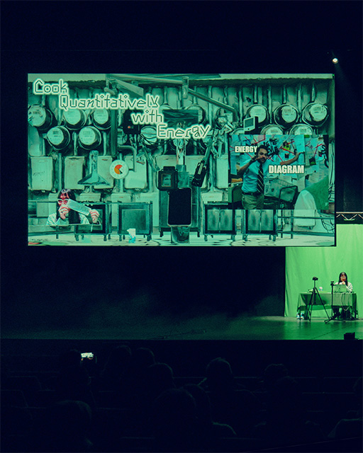
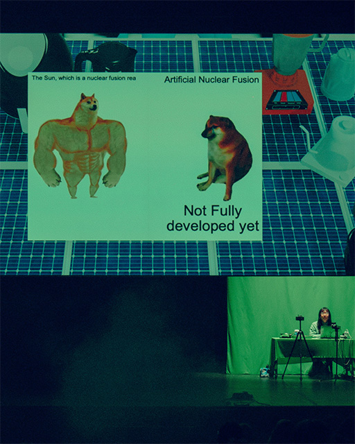
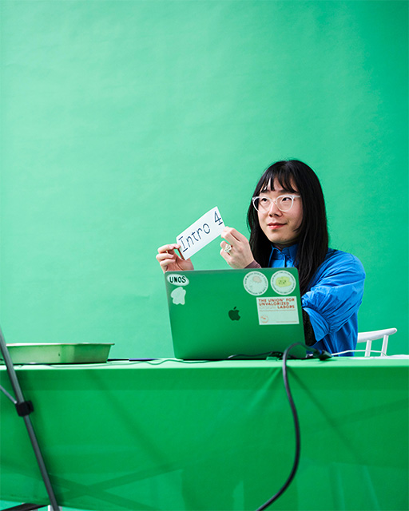
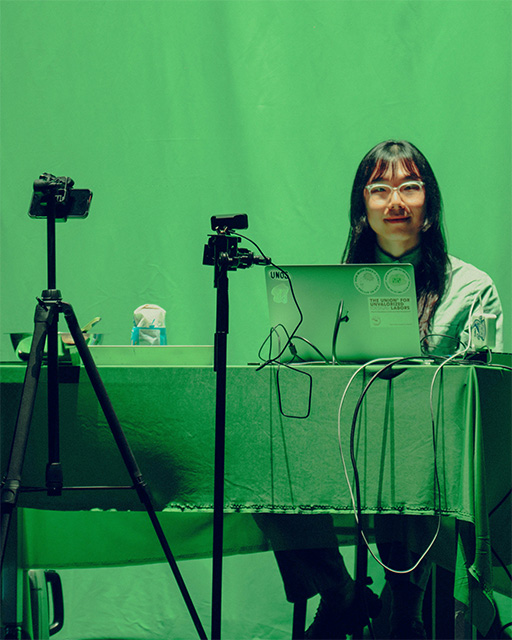
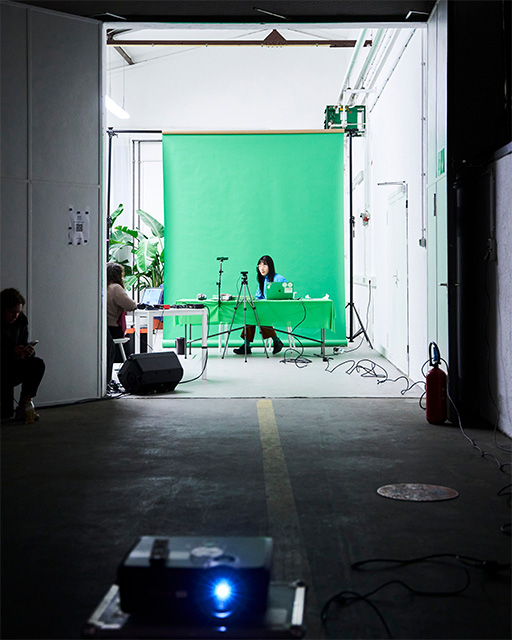
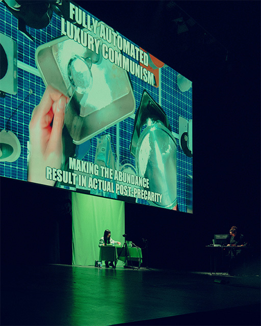
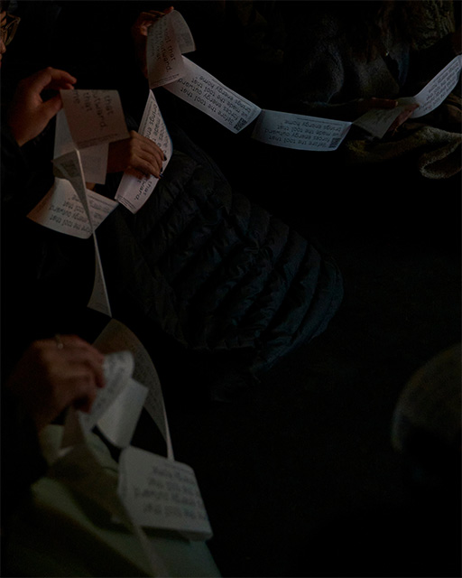
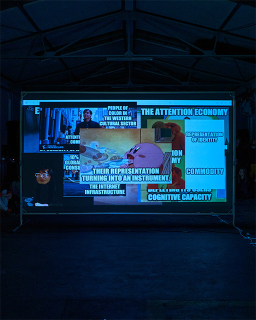
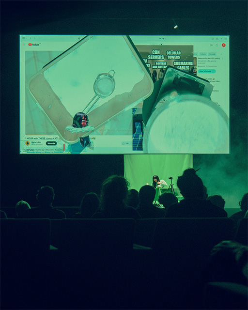
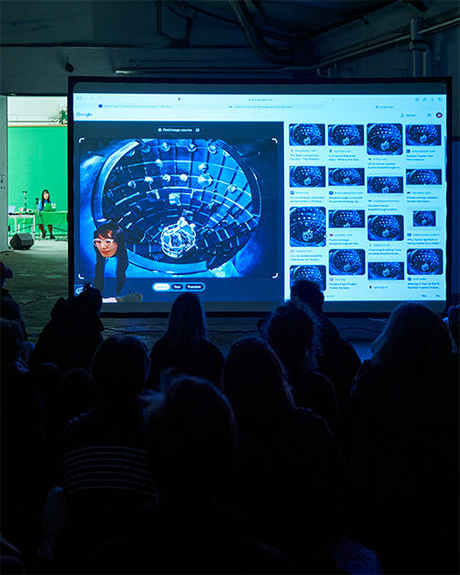
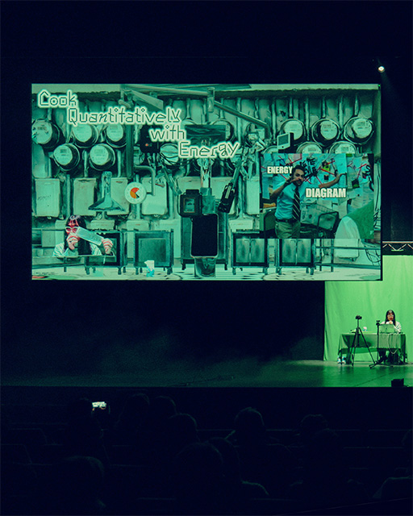
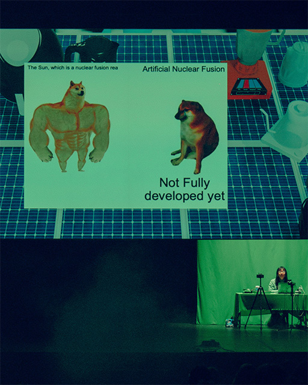
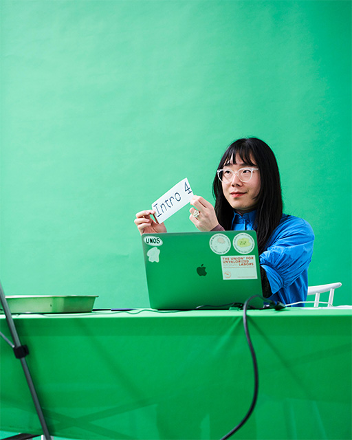
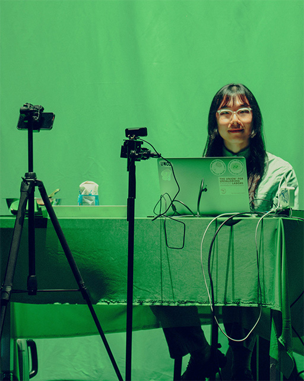
Portfolio - Noam Youngrak Son
For a more visual overview, check my Instagram.
| Title | Category | Year | Notes | Funding |
|---|
Noam Youngrak Son is a communication designer, design theorist, and cultural worker. Their design work encompasses small-scale publishing projects, speculative worldbuilding, workshops, lectures, writing, net art, and occasional performative interventions. As a cultural worker, they have co-organized the Ghent-based queer publishing collective Bebe Books since 2021. Son has expanded their focus from design to theory in order to critically engage with the ontology of the design industry, media, and broader material culture. This turn is informed by their observations of cultural assemblages that echo the extractive operations of capitalism on racialized and more-than-human populations. They are particularly attentive to the interconnected notions of speculation—both as an open artistic approach and as a process of value increase in capitalism. They research the tendency of the former in design to be subjugated by the latter and explore alternative methods for speculative design practices to realize their transindividual potential through collective organization and workshop facilitation. In this process, Son utilizes queer publishing as a technology for mobilizing attention beyond the financialized “scarce resource” of the attention economy. In this context, publishing extends beyond mere printed matter to encompass the maintenance of communities and the cultivation of interspecies relationships. The term "queer" here is not used as a statement of identity but as a process—small yet collective strategies of publishing that challenge the modern myth of the heroic designer.
Subscribe to the newsletter